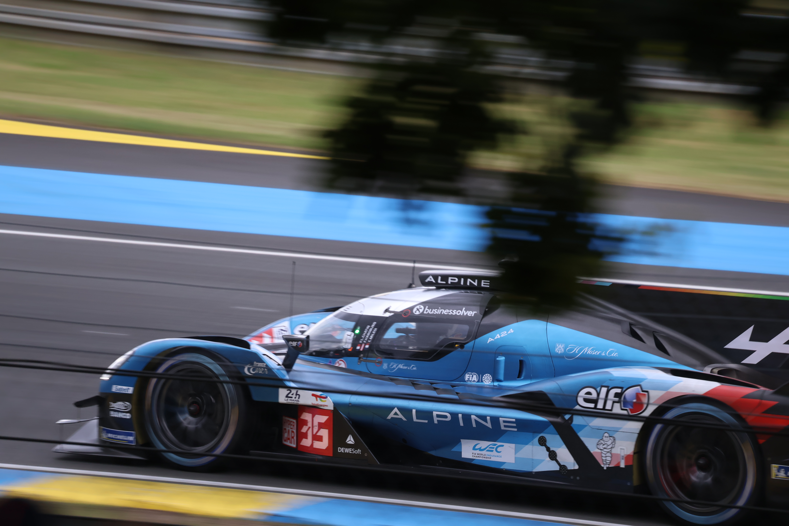
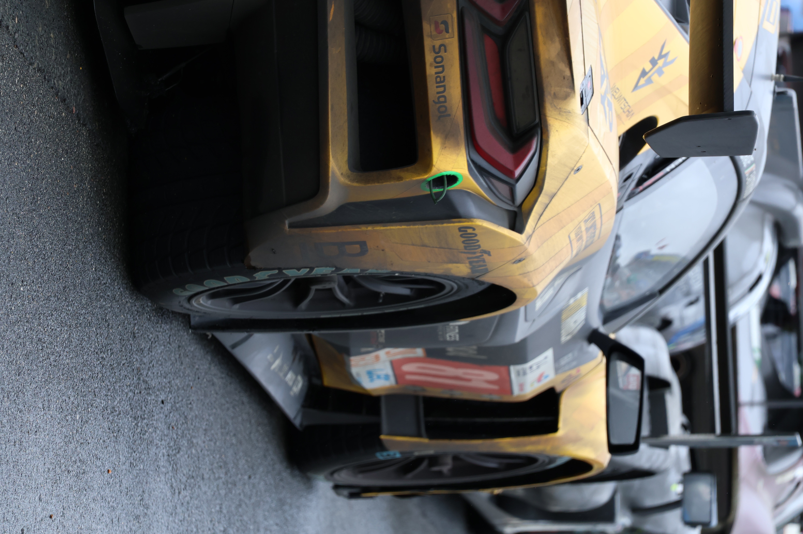

I'm a SAS Specialist with experience on projects of all sizes and complexities from MI and data analysis all the way to data and platform migration.
In the last few years I've been branching out into additional cloud data platforms and languages, as well as working towards one of my longer term aspirations of becoming capable across the full development stack, from back-end architecture and development through to front-end design and UI/UX.
Having been debating dipping my toes into photography for years, I was finally inspired to take the plunge a few years ago when I rediscovered one of the creators who first lit that fire in me around 15 years ago on Speedhunters, Larry Chen (a true master of his craft, do check him out!).
I settled on a Canon R50 to get myself started, and besides the usual landscape photos I've done a few fun car photoshoots for myself and friends, all as practice for events such as the 24 Hours of Le Mans in 2024, as well as Formula 1 at Circuit Gilles Villeneuve (Montreal, Canada) and the BTCC at Oulton Park in 2025. Hopefully plenty more events to come soon!
Right now most of my photography portfolio is either locally hosted or in Google Photos, so as I gradually get these into a shareable state, I'll include some of these events on my Portfolio page.

I grew up watching F1 thanks to family connections running all the way back to my grandad who was clerk of the course for a while back in the 50s at Aintree.
Much to his chagrin, I fell in love with the red cars and have been a lifelong Ferrari fan in all categories ever since.
I almost exclusively followed F1 and its feeder series F2 and F3 for a couple of decades, though in the last 10 years I've begun to follow pretty much every series I can get my hands on! From IndyCar to the World Endurance Championship, MotoGP to the World Rally Championship, if it has speedy race cars, I'll watch it!
